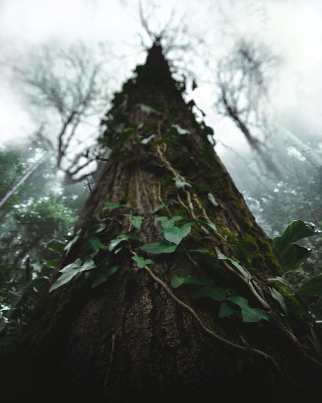

Can the wild make us fit for the modern world?
Modernity is extremely advantageous to humanity in many ways: electricity, internet, airplanes, pharmaceuticals and much more. However, the human biological design, like that of all other animals, still remains dominated by the ancient genome. While still holding/maintaining the same old biology we have made two critical changes in our lifestyle: we have become a lot more sedentary and spend more time indoors. This is probably affecting /impacting the switching of many genes and thereby giving rise to various emotional and physiological ailments.
It is the attempt of this action research to delve and create small ‘wilderness modules’ along with dosages with the conviction that this could significantly help humanity come out of many of the modern emotional and physiological ailments.
Plan of Work
In wilderness, we meet nature. To connect with nature is to connect with something beyond humans, of which we are a part.
“The clearest way into the Universe is through a forest wilderness.” - John Muir
Jim Robbins. Ecopsychology: How Immersion in Nature Benefits Your Health. (n.d.). Yale E360. Retrieved August 2, 2021, from https://e360.yale.edu/features/ecopsychology-how-immersion-in-nature-benefits-your-health
A growing body of research points to the beneficial effects that exposure to the natural world has on health, reducing stress and promoting healing. Present day policymakers, employers, and healthcare providers are increasingly giving consideration to the human need for nature in their plans and operations.
"A wilderness, in contrast with those areas where man and his own works dominate the landscape, is hereby recognized as an area where the earth and its community of life are untrammeled by man, where man himself is a visitor who does not remain." - US Wilderness Act
"Thousands of tired, nerve-shaken, over-civilized people are beginning to find out that going to the mountains is going home; that wildness is a necessity; and that mountain parks and reservations are useful not only as fountains of timber and irrigating rivers, but as fountains of life." - John Muir
Homeostasis refers to the capacity of the body to maintain the stability of diverse internal variables, such as temperature, acidity and water level, in the face of constant environmental disturbance.
To return to homeostasis is to return home.
Is there an ideal state? More often than not we think in terms of ideal state and current state; we want to be ‘high’ - higher productivity, higher income, higher IQ, higher performance, high speed or higher state of being.
Four key aspects of emotional fitness are emotional resilience, positive emotions, cognitive flexibility and emotional well-being
The core of the mind is the ecological unconscious. - Theodore Roszak
Each year, a new product makes life even more physically convenient – thereby driving people more to the indoors and to a more sedentary life. At the same time, emotional and mood disorders have been increasing exponentially year on year. Conveniences tend to weaken body . Is poor physical fitness undercutting our emotional fitness?
Here is a list of research and applied work happening in the related fields. These are the guideposts and inspirations for further investigation.
Madhur Anand
Work: Body-Mind Coach, Co-founder - Sehatvan
Education: BA(Hons.) Psychology, MA - Clinical Psychology (Batch of 2022) - Indira Gandhi National Open University, India
Khoji Program in Green Entreprenuership and Youth Leadership - Swaraj University
The project derived its name by combining an Urdu word ‘sehat’ meaning health with ‘van’, a hindi word meaning ‘forest’. The approach is guided by the Hindi word for healthy - ‘swasth’. Swasth is formed by combining two separate words ‘swa + sthit’, which mean ‘being situated in oneself’. Hence, the emotional dimension of well being/fitness has been an important element in health restoration at Sehatvan.
We would love to hear from you.